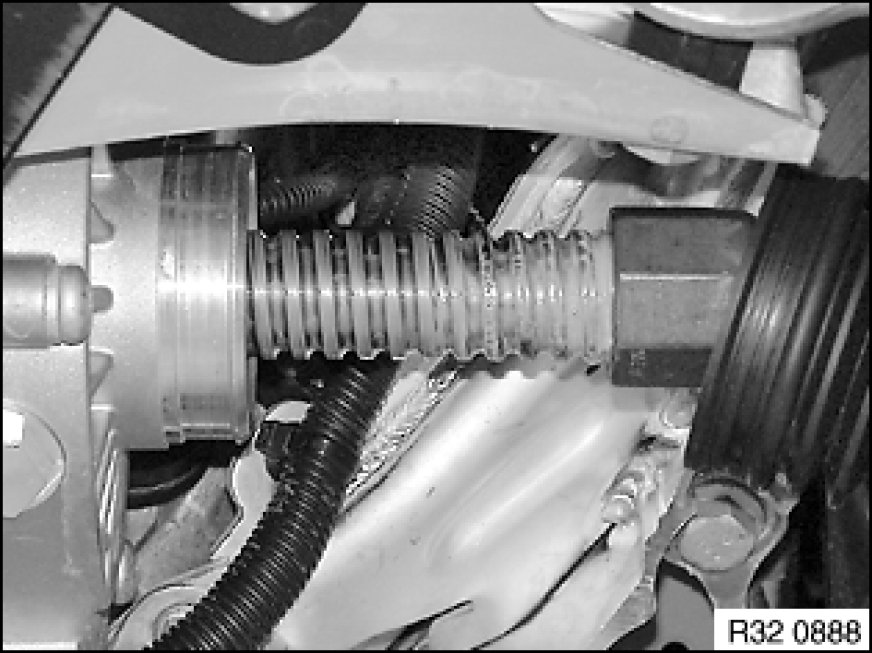
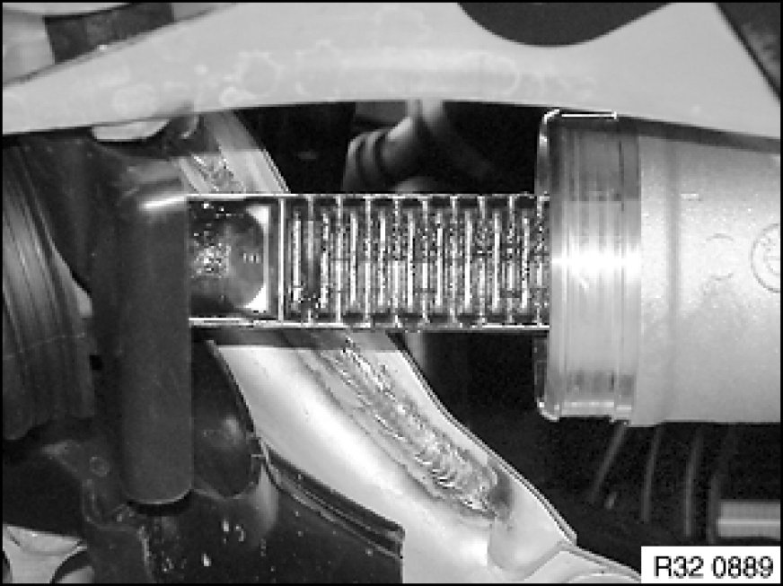
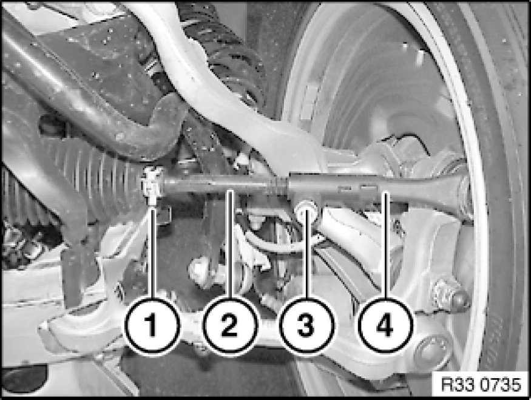
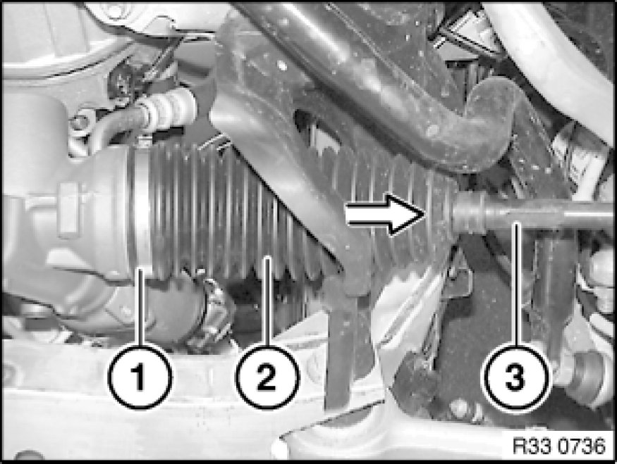
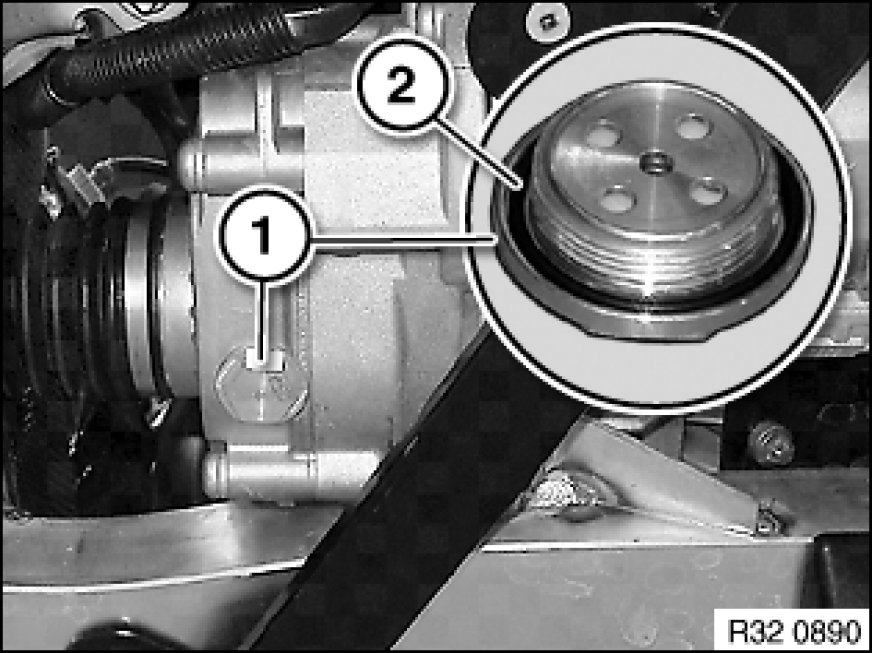

32 11 ... Replacing Gaiter for Electric Steering Gear (EPS) on Left or Right
32 11 ... - Replacing gaiter for electric steering gear (EPS) on left or right

Spindle side:
Important!
The steering gear must be replaced If the corrosion on the spindle running surface has advanced to such an extent that the steering is acoustically conspicuous under load!
Adhere to the utmost cleanliness.
Do not regrease the spindle running surface. Sufficient special grease was used during assembly for lifetime filling.

Rack side:
Important!
The steering gear must be replaced if the polished surface of the rack is damaged (e.g. by corrosion)!
Clean rack and check surface for damage (e.g. by corrosion).
Grease rack (refer to BMW Service Operating Fluids).

Necessary preliminary tasks:
- Remove front assembly underside protection Removing and Installing/Replacing Front Underbody Protection

Clean tie rod.
Release band clamp (1).
Mark screw-in depth of tie rod (2) or count thread turns.
Unscrew bolt (3).
Twist tie rod (2) out of tie rod end (4).
Installation Note:
Replace microencapsulated screw.
Tightening torque 32 21 2AZ Specifications.

Release ear clamp 32 41 ... Instructions For Removing and Installing Ear Clips(1).
Detach gaiter (2) from tie rod (3).
Installation Note:
Read and follow notes/information on spindle and rack sides at the start of the document.
Clean tie rod and apply grease to taper. This ensures that the gaiter is not rotated when the tie rod is rotated.

Release water drain valve (1) (20 A/F) and replace.
Installation Note:
Fit O-ring (2).
Tightening torque 32 00 3AZ 32 00 Steering.
After installation:
- Perform chassis alignment check
- Carry out steering angle sensor adjustment Adjustments